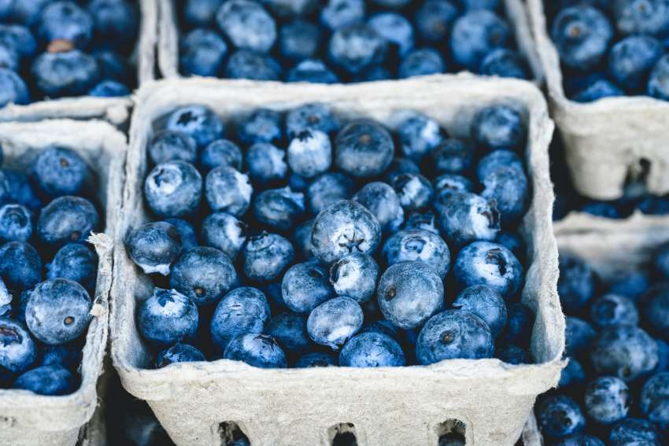
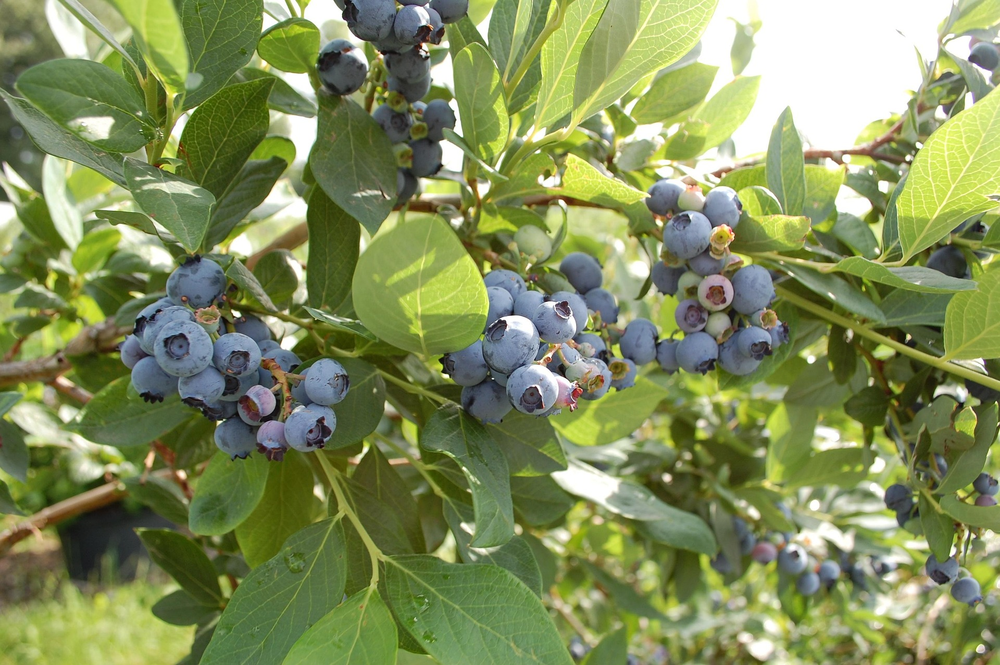
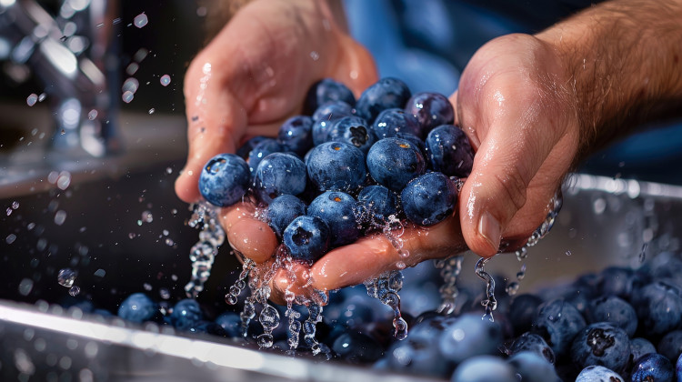
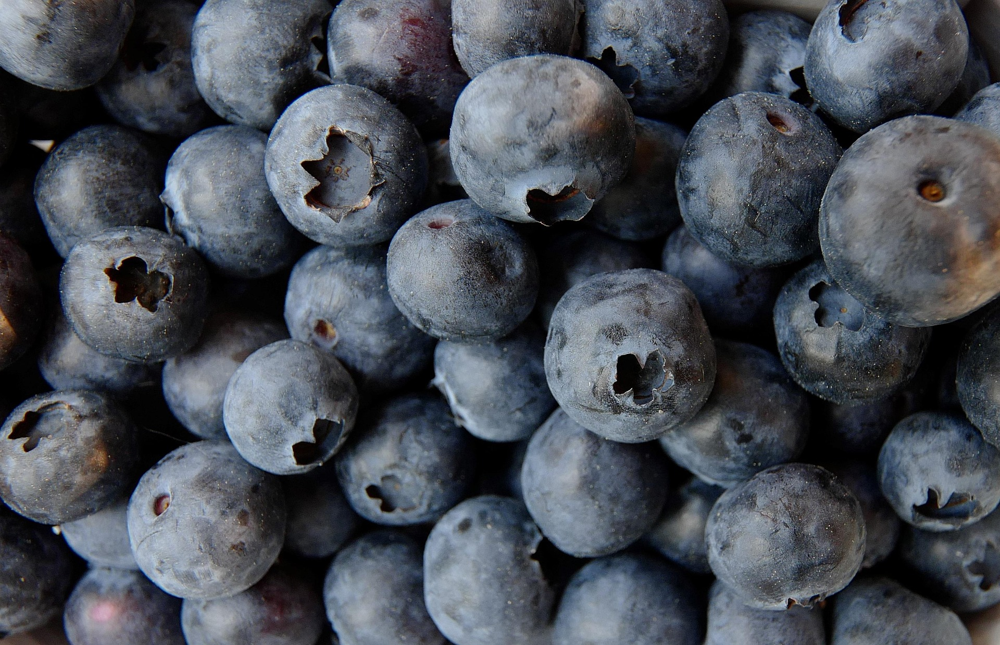

☰
Dowiedź się czegoś nowego!
Nasz Blog

Mity i fakty o borówkach amerykańskich
Poznaj prawdę o borówkach amerykańskich – obalamy popularne mity!

Jak rozpoznać dobrej jakości borówki w sklepie lub na targu ?
Poznaj sposoby, jak wybrać najlepsze borówki amerykańskie w sklepie lub na targu!

Jak pielęgnować borówkę amerykańską ?
Dowiedz się, jak odpowiednio dbać o borówkę w przydomowym ogrodzie, aby cieszyć się obfitymi plonami...

Właściwości zdrowotne borówek amerykańskich: Dlaczego warto je jeść codziennie?
Borówki amerykańskie to nie tylko smaczna przekąska – to prawdziwa bomba zdrowotna!